Shows what’s playing
Cover, controls and volume for Spotify, YouTube or any app in Windows’ media controls.
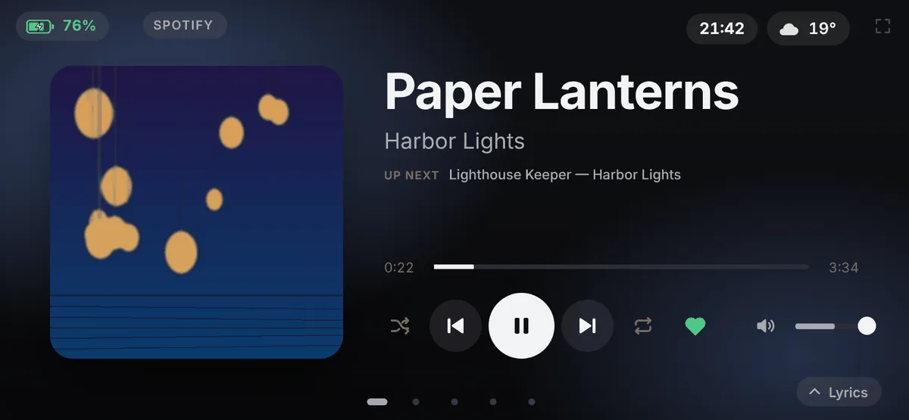
PhoneDesk puts what your PC is playing, synced lyrics, your calendar and live PC stats on a phone you no longer use. Free for Windows 10 and 11.
Runs on Android 7 or newer, over Wi-Fi or a USB cable.
Pick the screens, the clock face and your shortcut buttons in the PhoneDesk window. It sits in the tray, starts with Windows and updates itself. Read the changelog
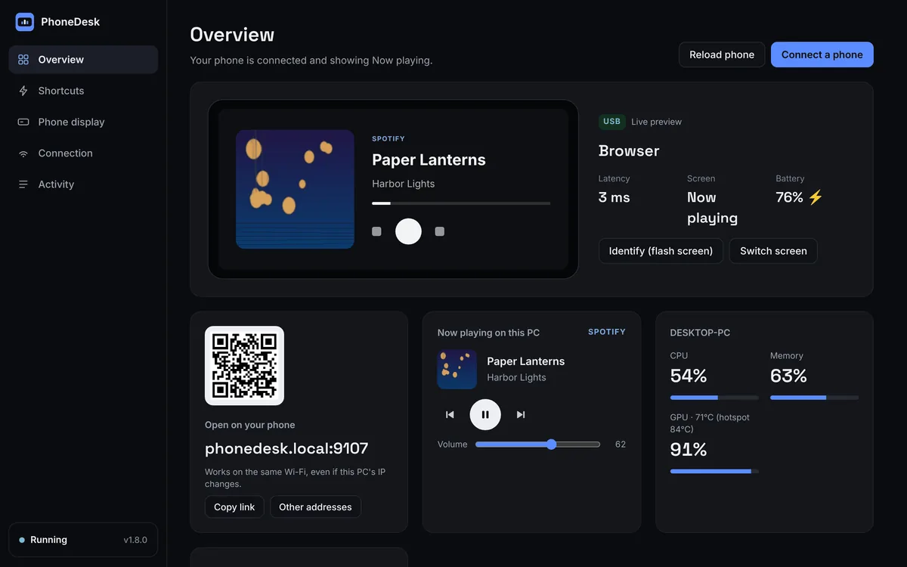
Cover, controls and volume for Spotify, YouTube or any app in Windows’ media controls.

Weather, a 5-day forecast and the next events from Google, Outlook or iCloud.
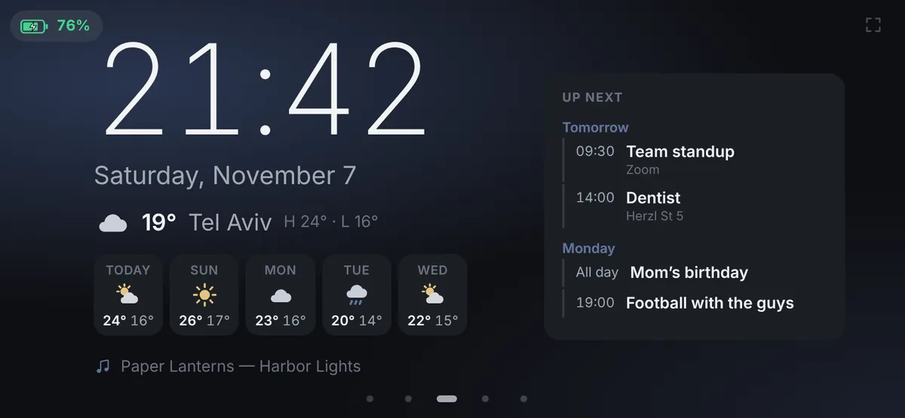
CPU and every thread, memory, GPU heat and power, and the network speed.
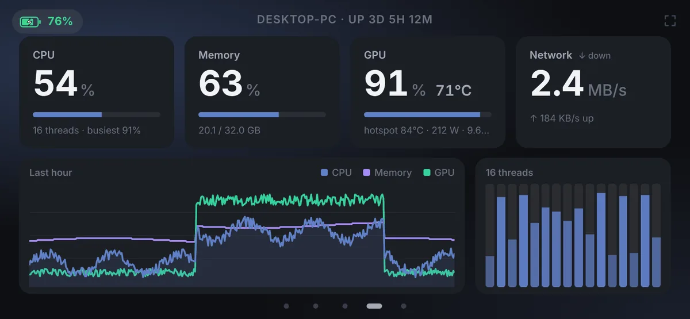
Big buttons for key combos, links and apps: mute the mic, lock the PC, open Spotify.
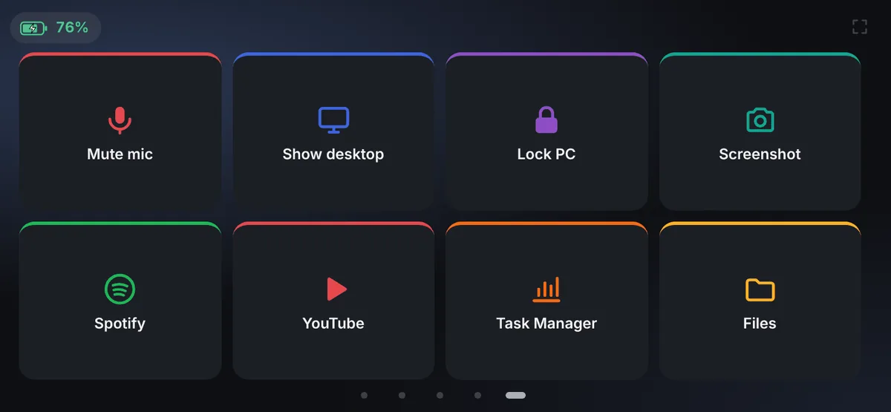
Timing comes from Spicy Lyrics, with LRCLIB as the fallback. If the timing is off, move it earlier or later for that song.
The whole song with the sung line lit, the cover and the credit on the left.
One big line at a time on frosted glass or black, in serif, sans, mono or script.
A thread runs from word to word and on to the next line as the song goes.
Hebrew and Arabic read right to left, fill right to left and use fonts made for them.
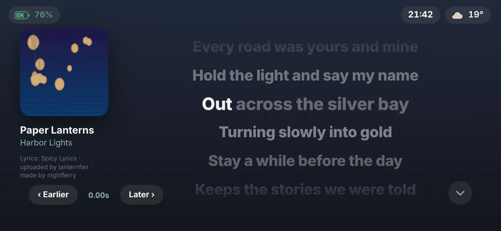
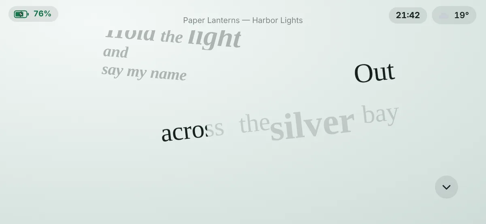
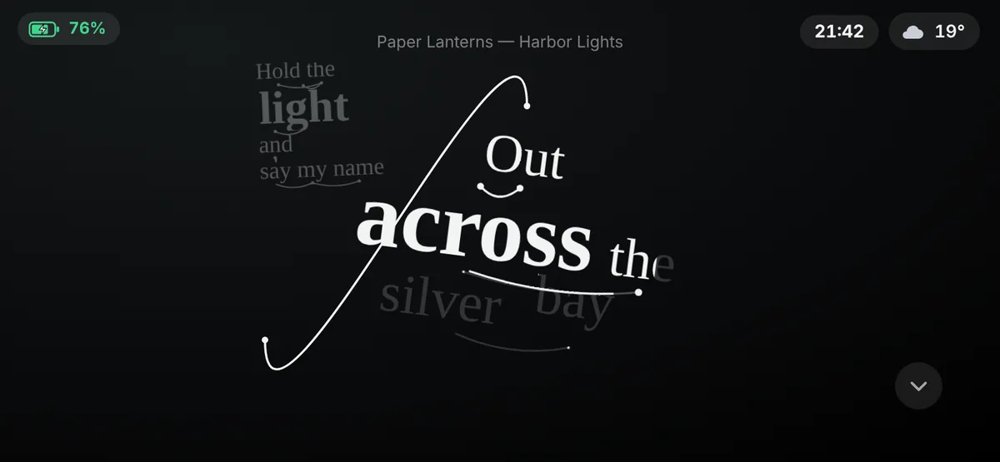
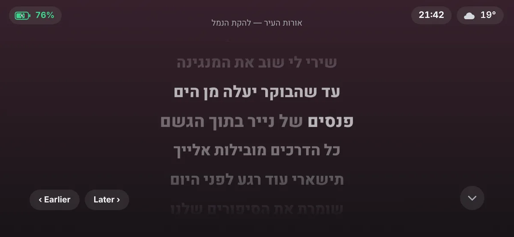
From a time you pick, or when the phone’s light sensor sees a dark room, the screen turns black with a dim red clock.
The phone app also turns the screen’s own brightness down, and puts it back in the morning.
Burn-in protection moves everything a few pixels every 3 minutes, so a screen that’s always on keeps no ghost image.
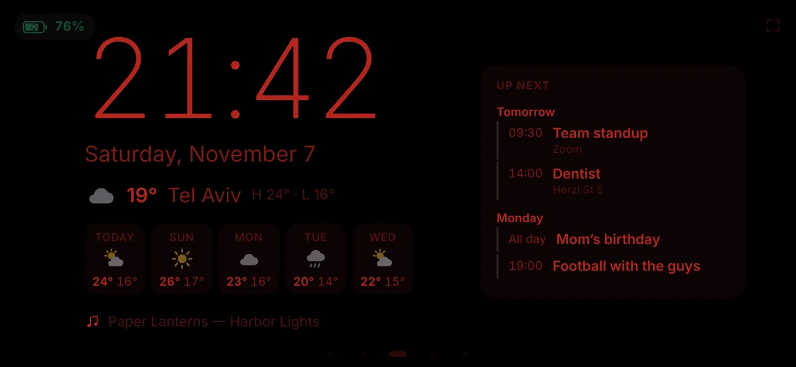
No admin rights and nothing else to install. It checks GitHub for updates by itself.
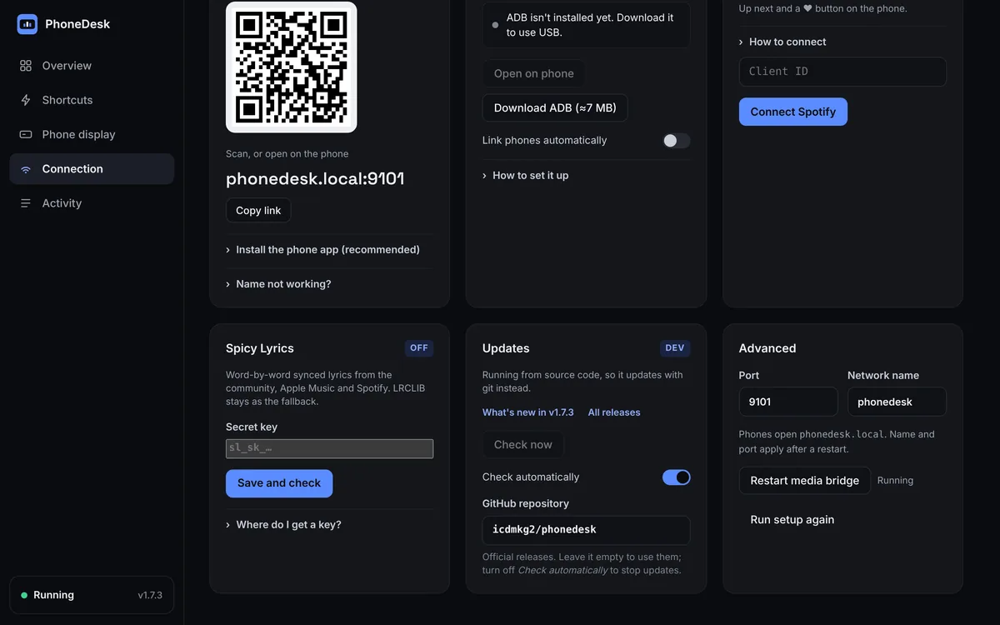
Scan the QR code, or install the 25 KB phone app: it finds the PC by itself.
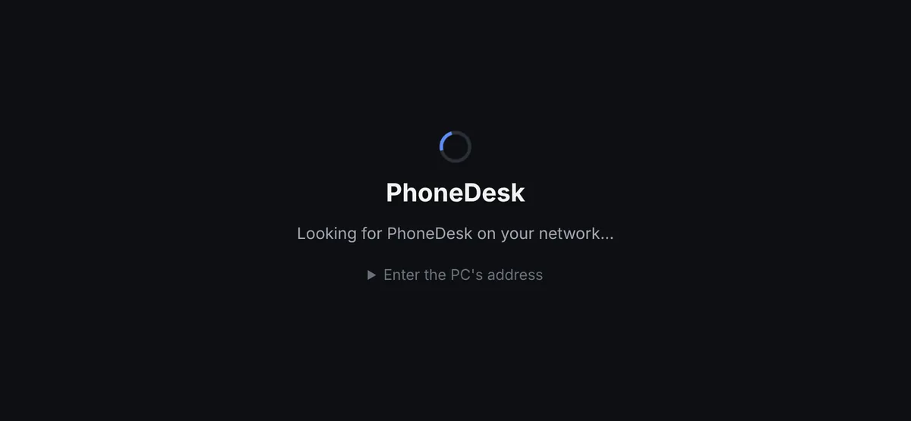
Clock face, lyrics style, theme and night hours. The phone follows every change.
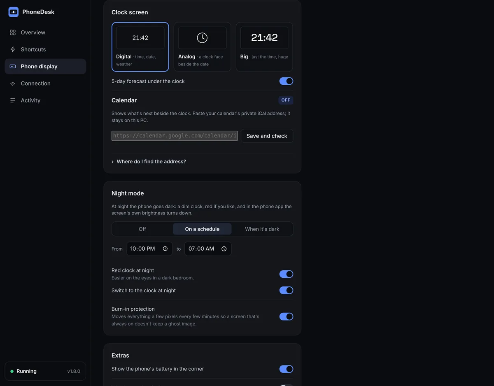
35
versions released, each with notes
6
screens to swipe between
0
euros, on any number of PCs
A Windows 10 or 11 PC and a phone on Android 7 or newer, on the same Wi-Fi or plugged in by USB.
The setup isn’t code-signed yet, so Windows asks first: More info, then Run anyway. GitHub Actions builds every release.
Keys, tokens and your calendar address never leave the PC. Lyric and weather lookups send only the song or the city.
Activity, Save diagnostics: one zip with the logs and none of your secrets, for a bug report.
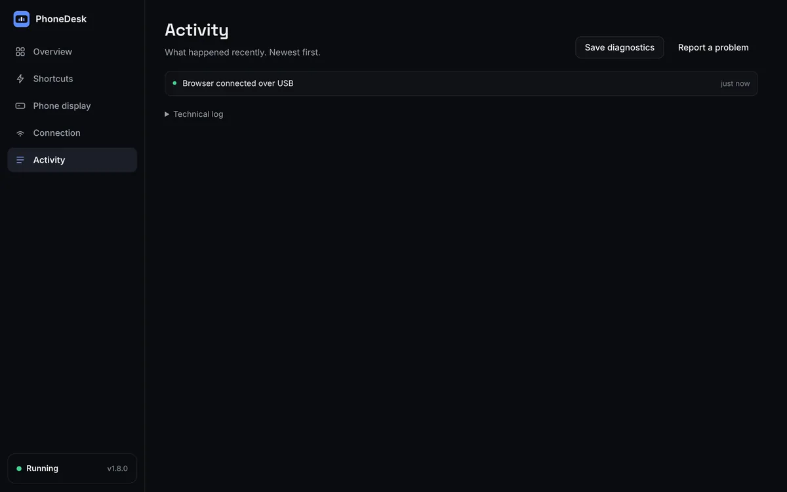